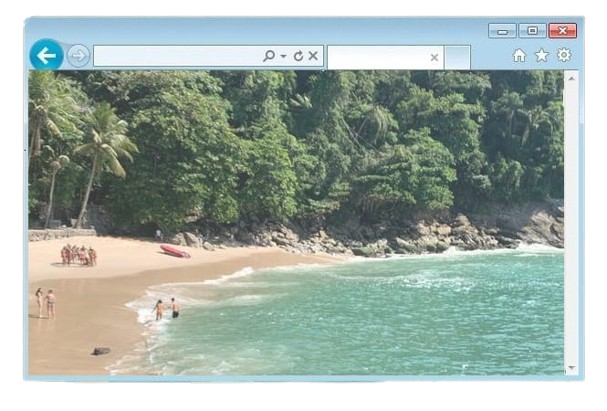
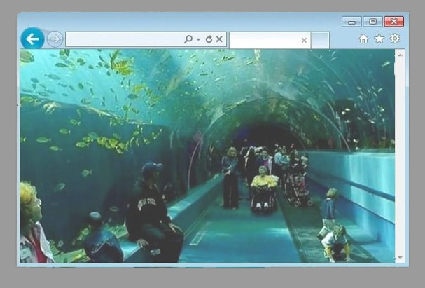

População: ~320 mil habitantes Localização: litoral de São Paulo
(Baixada Santista) Bioma: Mata Atlântica Fundação: município criado
em 1934 Aniversário: 30 de junho Característica: estância balneária
e destino turístico

A região de Guarujá era originalmente habitada por povos indígenas
muito antes da chegada dos colonizadores europeus.
Esses grupos viviam
da pesca, da coleta e de atividades ligadas à natureza, aproveitando
os recursos abundantes do litoral.
A ocupação pelos portugueses teve
início ainda no período colonial, quando a área passou a integrar a
dinâmica de exploração e povoamento da capitania de São Paulo.
Apesar
disso, por muitos anos o desenvolvimento da região foi lento, mantendo
características mais naturais e pouco urbanizadas.
Foi a partir do
início do século XX que o Guarujá começou a ganhar destaque,
impulsionado principalmente pelo turismo .
Suas belas praias e a
proximidade com a cidade de Santos e a capital São Paulo atraíram
visitantes e veranistas, contribuindo para o crescimento urbano e
econômico da região.
Em 1934, o Guarujá conquistou sua emancipação
político-administrativa, separando-se oficialmente de Santos e
tornando-se um município independente.
Desde então, consolidou-se como
um dos destinos turísticos mais importantes do litoral paulista,
conhecido por sua infraestrutura, paisagens naturais e relevância
histórica.

Economia baseada principalmente no turismo Forte presença de
comércio e serviços Um dos destinos de praia mais populares de São
Paulo Grande movimento de turistas, especialmente no verão
População urbana com crescimento acelerado
Presença de desigualdade social em algumas áreas
Economia sazonal influencia empregos e renda
Forte aumento populacional na alta temporada
mínimos
Localizada na Ilha de Santo Amaro Possui praias, morros e áreas de
Mata Atlântica Presença de manguezais e áreas costeiras Relevo com
morros e planícies litorâneas
Fortalezas históricas (como a Fortaleza da Barra Grande) Praias
famosas (Enseada, Pitangueiras, Pernambuco) Mirantes e trilhas
ecológicas Aquário do Guarujá